Analysis Tab
Analysis Window Components
Use the analysis window to display the violation information, categories defined to group violation types, graphical display of violations, and category summary.
For SSTA analysis, see Analysis Window in Statistical Mode.
Fields and Options
|
Displays the Write Textual Report (Human Readable) form. Use this form to write a text file containing information about paths that have been loaded from an .mtarpt file generated by the |
||
|
Displays the Write Category Report File form. Use this form to write a text report containing category summary information. For more information, see Write Category Report File. |
||
|
Displays menu options to create standard categories for timing debug. Following options are displayed: |
||
|
Displays Path Analysis form. Use this form to create standard path categories according to basic path groups. For more information, see Path Analysis (Path Groups). |
||
|
Displays Path Analysis form. Use this form to create categories according to launch clocks - capture clock combinations. For more information, see Path Analysis (Clock Analysis). |
||
|
Displays the Path Analysis form. Use this form to create categories according to the hierarchical characteristics of the paths. The software uses the floorplan file to extract information for guides, fences or Macros.
For more information, see " |
||
|
Displays the Clock matrix Viewer form. to show the relationship of source and destination clocks. User can call this tool under the menu of Analysis in Global Timing Debug. For more information, see Clock Matrix Viewer. |
||
|
Displays the Path Analysis form. Use this form to create categories according to the views that were defined for multi-mode multi-corner analysis. For more information, see Path Analysis (View Analysis). |
||
|
Displays the Path Analysis form. Use this form to create a category containing paths identified as false during the false path analysis by Conformal Constraint Designer (ccd). |
||
|
Displays the Path Analysis form. Use this form to create categories according to the bottleneck analysis of the critical paths. For more information, see Path Analysis (Bottleneck Analysis). |
||
|
Displays the Path Analysis form. Use this form to read or generate a report containing max transition, max capacitance, and max fanout violations. For more information, see Path Analysis (DRV Analysis). |
||
|
Displays menu options for creating and managing categories. Following options are displayed: |
||
|
Displays the Create Category form. Use this form to specify definitions for categories as per your design requirements. For more information, see Create Path Category. |
||
|
Saves the category definitions in a file. You can use this file to load a set of predefined categories into a new timing debug session. |
||
|
Displays the end point histogram. The failing endpoints are displayed in red and the passing endpoints are displayed in green color. Right-click on the histogram to display the following options: |
||
|
Displays smaller or larger area of the histogram in greater or lesser detail. |
||
|
Displays areas to the top, bottom, left or right of the displayed histogram. |
||
|
Displays the Timing Debug Preferences form. Use this form to specify the statistics for the histogram and number of pages of report to be displayed in the form. |
||
|
Displays the summary of a single selected category. To select a category, double-click on the category name in the Path Category field. |
||
|
Displays the category information as nested trees. The columns in this field include, name of the category, worst negative slack (WNS), total negative slack (TNS), and number of failing paths. Right click on the category name to display the following options: |
||
|
Displays the detailed path information in the Path List field. |
||
|
Displays the selected category as histogram. The added category is displayed in a different color. Use this option to identify paths grouped under a specific category. |
||
|
Removes the category from the histogram, but does not delete it. Hidden categories are indicated with the letter "H" to the left of the category name. |
||
|
Displays the Set Category Slack Correction form. Use this form to specify the estimated slack correction for the selected category of paths. |
||
|
Displays the Create Path Category form. Use this form to change category definition as per your requirements. For more information, see Create Path Category. |
||
|
Displays Color Category Name form. Use this form to specify the color to be used in the Path Histogram for the selected category. |
||
|
Copies the name of the category in the Path Category table. Use this feature to copy and paste the text from Path Category to Create Path Category. |
||
|
Displays the Edit Table Column form. Use this form to customize columns in the Timing Debug and Timing Path Analyzer windows. |
||
|
Displays the list of paths (endpoint and slack) in the selected category. Double-click on a path to display the Timing Path Analyzer form. Use this form for detailed analysis of a single path. For more information on Timing Path Analyzer form, see Timing Path Analyzer. When you load multiple debug reports in a single timing debug session, the paths are displayed in different colors corresponding to the report file they are coming from. You can move the cursor over a path to display the name of the report file. |
||
|
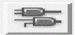 |
||
Analysis Window in Statistical Mode
The analysis window displays SSTA details if the statistical static timing analysis (SSTA) mode is enabled.
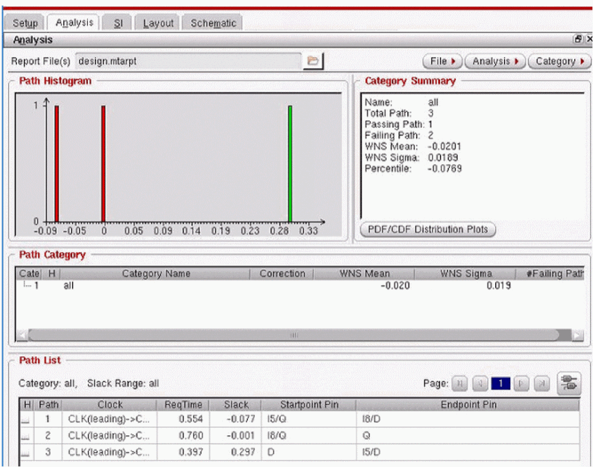
In Statistical mode, the following fields and options are visible and enabled:
|
Displays PDF and CDF plots showing combined distribution of slacks. |
||
|
Double-click on a path to display the Timing Path Analyzer form. Use this form for detailed analysis of a single path. For more information, see Timing Path Analyzer - Statistical. |
||
Related Text Commands
The following text command provides equivalent or additional functionality:
- analyze_paths_by_basic_path_group
- analyze_paths_by_bottleneck
- analyze_paths_by_clock_domain
- analyze_paths_by_critical_false_path
- analyze_paths_by_hierarchy
- analyze_paths_by_view
- create_path_category
- delete_path_category
- load_path_categories
- load_timing_debug_report
- save_path_categories
For more information, see "
Display/Generate Timing Report
Use the Display/Generate Timing Report form to specify the violation report to be read in for debugging timing results.
In the Analysis tab. click the folder icon next to the Report File(s) field.
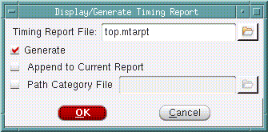
Display/Generate Timing Report Fields and Options
Edit Table Column
To edit a table column, follow the steps given below:
- Use the Edit Table Column form to customize columns in the Analysis and Timing Path Analyzer windows.
- Open Analysis or Timing Path Analyzer, then right-click on a path. A drop-down menu is displayed.
-
Select Edit Table Column.
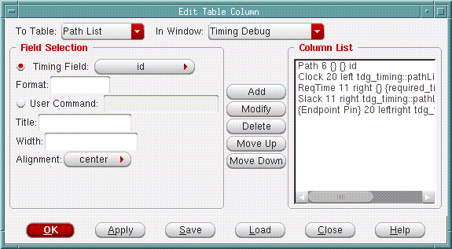
Edit Table Column Fields and Options
|
Choose the table whose columns you want to modify: For the Timing Path Analyzer window choose Data Path, Capture Clock, or Launch Clock. For the Timing Debug window, choose Path Category or Path List. |
||
|
Specifies the name of the window that contains the table column you want to edit. Choose Timing Debug or Timing Path Analyzer. |
||
|
Specifies the type of information to include in the column. The available options will vary depending upon the table you choose in the To Table field. |
||
|
Specifies a table format. For example, specify %.3f if you only want to display three decimal digits. |
||
|
Specifies the procedure you want to use to determine the information you want to include in the column. In the procedure, you must pass the instance as a parameter. You must source the file containing procedure before specifying the procedure here. # Combine fedge (from edge) and tedge (to edge) #information into a single field proc my_get_edge {id var} { |
||
|
Specifies the alignment of the column. Choose from center, left, right, and leftright. |
||
|
Lists the columns in the order in which they appear in the table, left to right. |
||
|
Lets you modify characteristics. Click on a column in the column list. Edit the information, then click modify. |
||
|
Moves a column up in the column list. This effectively moves a column to the left in the table. |
||
|
Moves a column down in the column list. This effectively moves a column to the right table. |
||
|
Opens the Load GTD Preferences form, which you can use to load a tcl command file to use for editing table columns. For more information, see Load GTD Preference File. |
||
Load GTD Preference File
- Use the Load GTD Preferences form to load a TCL command file to use for editing table columns.
- On the Analysis window or Timing Path Browser form, then right-click on a path.
- Select Edit Table Column. The Edit Table Column form is displayed.
-
Click Load.
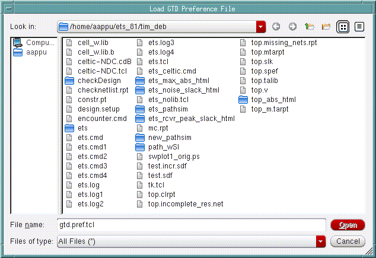
Load GTD Preferences File Fields and Options
Write Textual Report
Use the Write Text Report form to write a text file containing information about paths that have been loaded from a .mtarpt file generated by the Display/Generate Timing Report.
The generated report cannot be read back into the timing debug environment.
Timing Debug - Write Textual Report File Fields and Options
Column Width Table
Use the Column Width Table form to change the width of the columns in the file created by the Write Textual Report form, and to specify the order in which you want to columns to appear.
Column Width Table Fields and Options
Write Category Report File
Use the Write Category Report File form to write a text file containing the following information:
- Category name
- Total number of paths
- Number of passing paths
- Number of failing paths
- Worst negative slack
- Total negative slack
- TNS
-
Choose File - Write Category Summary.
Timing Debug - Write Category Report Fields and Options
Timing Debug Preferences - General
Use the General page of the Timing Debug Preferences form to specify the statistics for the histogram, number of pages of report to be displayed in the form, and highlighting options.
Timing Debug Preferences Fields and Options
Timing Debug Preferences - Color
Use the Color page of the Timing Debug Preferences form to specify the colors for the slack calculation bar elements in the Timing Path Analyzer form.
Color Fields and Options
Timing Debug Preferences - Color - Select Color
Use the Select form to customize the colors displayed on the Timing Debug Preferences - Color page.
Timing Debug Preferences - Color - Select Color Violation Fields and Options
|
Displays the available basic colors. Sliders let you set the hue for the colors comprising your custom color. |
|
Timing Debug Preferences - Bottleneck Analysis
Use the Bottleneck page of the Timing Debug Preferences form to colorize cells based on the occurrences of violating paths.
Timing Debug Preferences - Bottleneck Analysis Fields and Options
Timing Debug Preferences - Select Color
Use the Set Color form to set custom colors for the Bottleneck Analysis and Cell Coloring form.
-
Choose Debug Timing File - Preferences, click on the Cell Coloring tab, then click on a color.
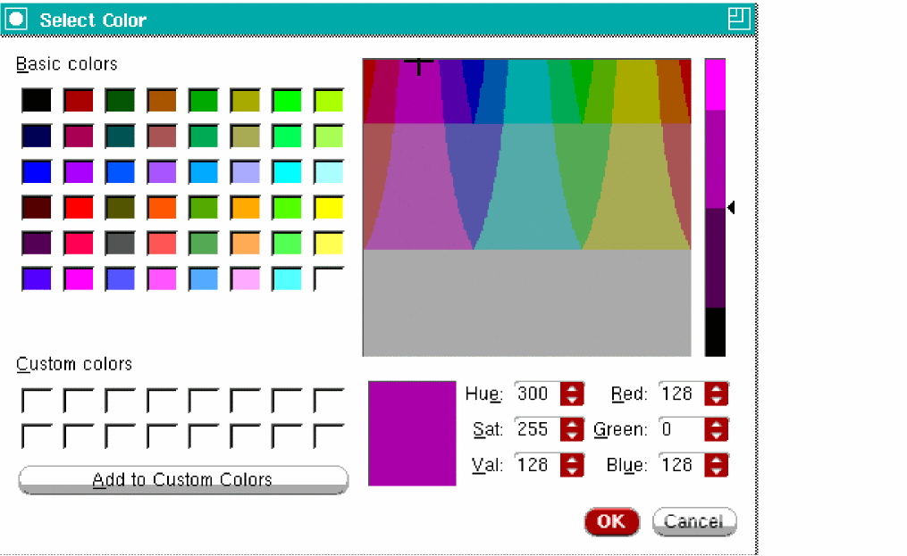
Timing Preferences - Select Color Fields and Options
|
Displays the available basic colors. Sliders let you set the hue for the colors comprising your custom color. |
|
Timing Debug Preferences - Cell Coloring
Use the Cell Coloring page of the Timing Debug Preferences form to choose colors for specific cells in the delay bar. Color precedence is top to bottom in this form. If you set coloring in a session, the software saves the settings and restores them in the next session.
Timing Debug Preferences - Cell Coloring Fields and Options
|
To customize colors, click on the color. The |
|
|
Indicates whether you want to apply the color to the specified cells. |
|
|
For each color, you can choose to provide one of the following: The procedure is invoked with the full instance name as the argument. You must source the file containing the procedure before you use this feature. For an example, see Timing Debug Preferences - Cell Coloring. |
|
|
Lets you enter the cell names or procedure name. You can use wildcards when you specify cells, for example: INV*, BUF*, DLY*, HVT*. |
|
Timing Debug Preferences - Highlight Path
Use the Highlight Path page of the Timing Debug Preferences form to specify the colors and category numbers for color coded critical paths highlighting of categories.
-
Choose Timing - Debug Timing - File - Preferences, and click on the Highlight Path tab.
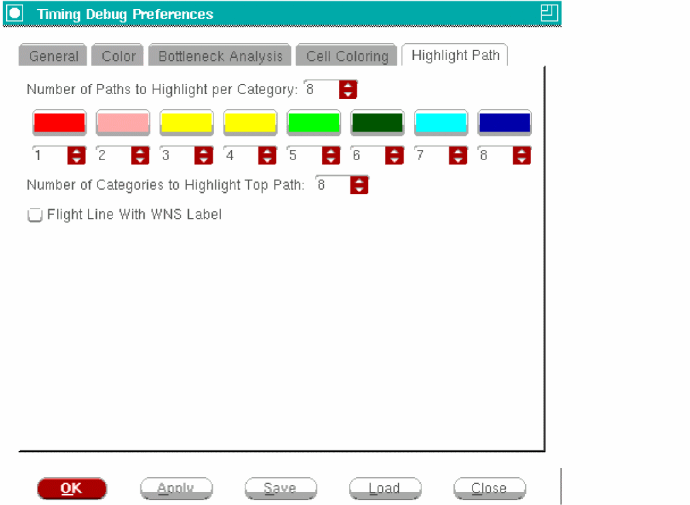
Timing Debug Preferences - Highlight Path Fields and Options
Path Analysis
You can access the following forms from the Analysis menu:
- Path Analysis (Path Groups)
-
Path Analysis (Hierarchical Analysis) on page 511 - Path Analysis (Clock Analysis)
- Path Analysis (False Path Analysis)
- Path Analysis (View Analysis)
- Path Analysis (Bottleneck Analysis)
- Path Analysis (DRV Analysis)
- Noise Result Analysis
- Hierarchical Analysis Viewer
- Clock Matrix Viewer
Path Analysis (Path Groups)
Use the Path Analysis form to create standard path categories according to basic path groups. The basic path groups are:
Registers can be macros, latches, or sequential cell types.
Path Analysis (Path Groups) Fields and Options
|
Displays the name of the text command that you can specify instead of using the GUI. |
|
|
Displays the details of the categories that are created when you select the OK button. |
Related Text Commands
The following text command provides equivalent or additional functionality:
For more information, see "
Path Analysis (Hierarchical Analysis)
Use the Path Analysis form to create categories according to the hierarchical characteristics of the paths. The software uses the floorplan file to extract information for guides, fences or Macros.
Hierarchical analysis is divided into two types:
Hierarchical Floorplan Analysis
In the Analysis tab, choose Analysis - Hierarchical Floorplan.
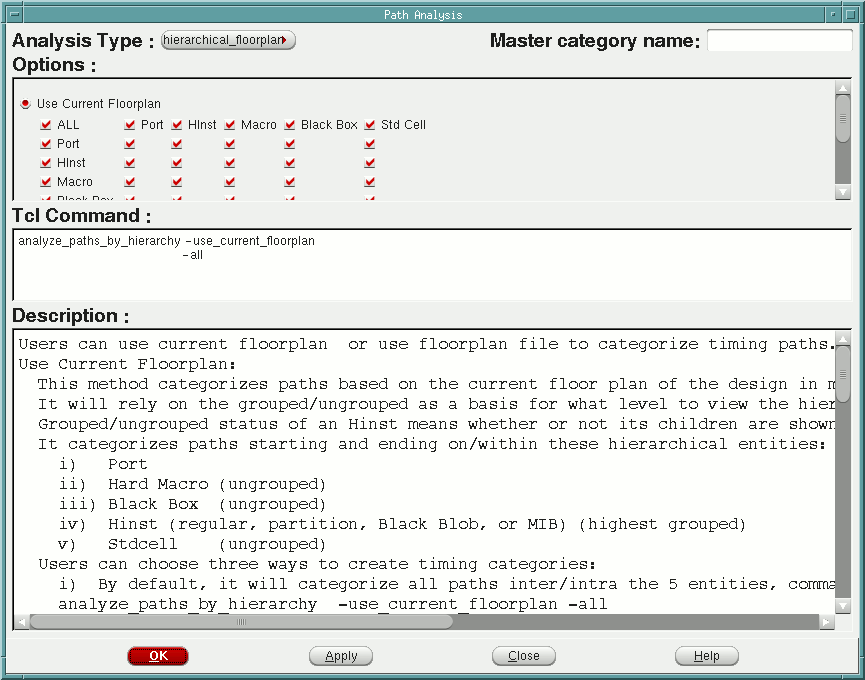
Path Analysis (Hierarchical Floorplan Analysis) Fields and Options
Related Text Commands
The following text command provides equivalent or additional functionality:
For more information, see "
Hierarchical Port Analysis
In the Analysis tab, choose Analysis - Hierarchical Port.
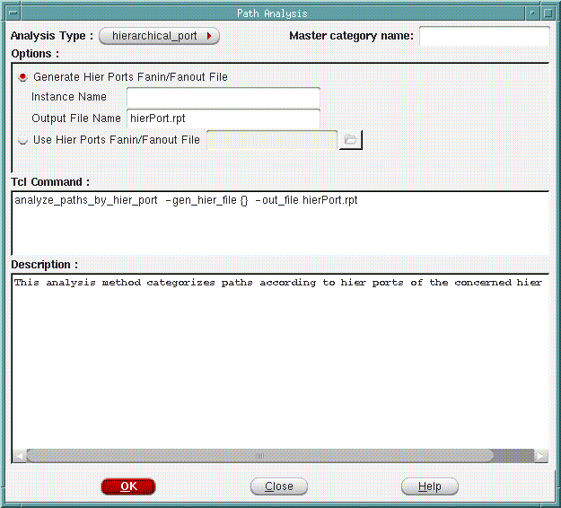
Related Text Commands
The following text command provides equivalent or additional functionality:
Path Analysis (Clock Analysis)
Use the Path Analysis form to create categories according to launch clock-capture clock combinations. Following categories are created:
- Paths with clock fully contained in a single domain, clk1.
- Paths with clocks starting one clock domain and ending at another, clk1->clk2.
-
Choose Analysis - Clock Analysis.
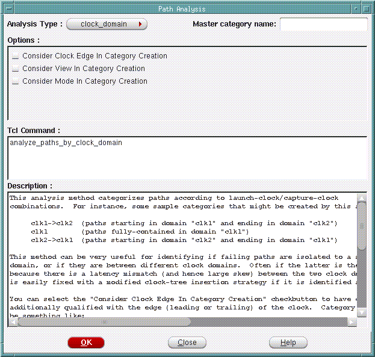
Path Analysis (Clock Analysis) Fields and Options
Related Text Commands
The following text command provides equivalent or additional functionality:
For more information, see "
Path Analysis (False Path Analysis)
Use the Path Analysis form to determine whether the reported paths are real critical paths. The analysis is performed by the Conformal Constraint Designer (CCD). As a result of this analysis, the tool creates a category in the Global Timing Debug window that contains either the violating paths only, or violating paths except for false paths.
Path Analysis (False Path Analysis) Fields and Options
Path Analysis (View Analysis)
Use the Path Analysis form to create categories according to the view that each path is related to. You can analyze the impact of each view on the performance using this category.
Path Analysis (View Analysis) Fields and Options
|
Displays the name of the text command that you can specify instead of using the GUI. |
|
|
Displays the details of the categories that are created when you select the OK button. |
Related Text Commands
The following text command provides equivalent or additional functionality:
For more information, see "
Path Analysis (Bottleneck Analysis)
Use the Path Analysis form to create categories according to the bottleneck analysis of the critical paths. Bottleneck Analysis detects the instances that are often involved in the critical paths in the design. Any change in timing for these instances impacts multiple critical paths in the design. Therefore you can use this information to change your design (floorplan, placement, constraints etc) around these instances. The bottleneck analysis computes the number of occurrences that an instance appears in the paths that you display in the Timing Debug window, and provides the following output:
- Colors most used instance based on number of occurrences.
- Creates N number of path categories for the instances with the highest number of occurrences. N is the number you specify in the Path Analysis form.
-
Choose Analysis - Bottleneck Analysis.
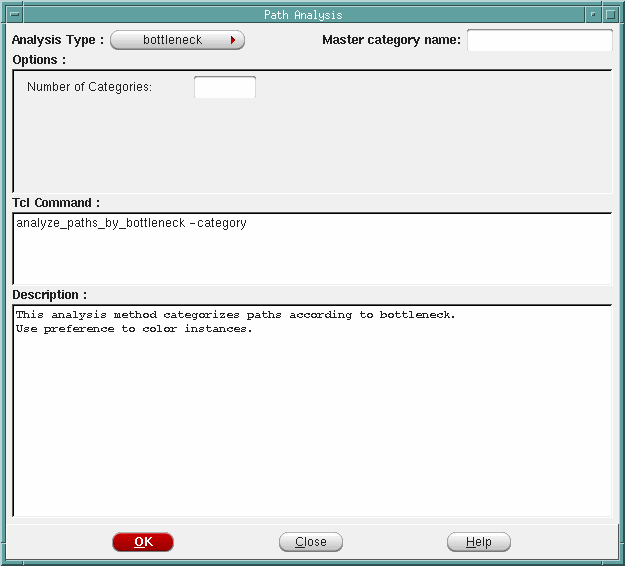
Path Analysis (Bottleneck Analysis) Fields and Options
Path Analysis (DRV Analysis)
Use the Path Analysis form to read or generate a report containing max transition, max capacitance, and max fanout violations. Paths that are affected by the selected DRV type are grouped into a category.
Path Analysis (drv) Fields and Options
Noise Result Analysis
Use the Display Noise Net form to browse aggressor information for each of the glitch failures and to locate the glitch nets (aggressor and victim) in the physical layout for ECO fixing. You can generate the required input files for this form by using the write_noise_eco -format edi command.
Display Noise Net Fields and Options
For information on fields and options, see “Display Noise Net”.
Hierarchical Analysis Viewer
Use the Hierarchical Analysis Viewer form to view the results from hierarchical analysis that is done when you create the hierarchical paths category.
For more information on creating the hierarchical paths category, see Path Analysis (Hierarchical Analysis)".
Hierarchical Analysis Viewer Fields and Options
|
Displays the timing connectivity between floorplan modules or partitions. |
|
|
Displays the paths that are grouped in the hierarchical path category. |
Clock Matrix Viewer
Use the Clock Matrix Viewer to show the relationship of source and destination clocks. User can call this tool under the menu of Analysis in Global Timing Debug.
Create Path Category
Use the Create Path Category form to define the categories as per your design requirements. You can use the Timing Path Analyzer form to analyze the critical paths and identify possible problems with the design. You can then use the Create Path Category form to define a category or categories to group all paths with same problem.
Create Path Category Fields and Options
Related Text Commands
The following text command provides equivalent or additional functionality:
For more information, see "
Timing Path Analyzer
Use the Timing Path Analyzer form to identify issues related to a path using slack calculation bars, timing bar, and hierarchy view.
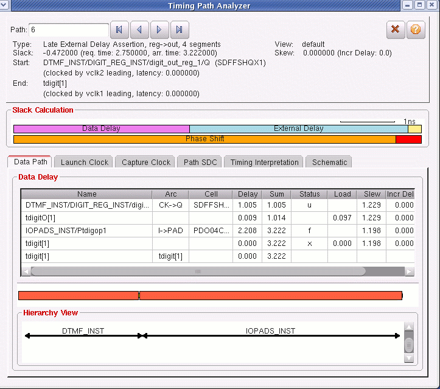
By default, the Data Path tab is selected (see Timing Path Analyzer - Data Path).
Timing Path Analyzer - Fields and Options
Timing Path Analyzer - Data Path
Use the Timing Path Analyzer - Data Path form to identify issues related to a path using the data path details. The Data Path form displays the details of a complete data path.
Timing Path Analyzer - Data Path Fields and Options
For details on the fields and options see Timing Path Analyzer.
Timing Path Analyzer - Launch Clock
Use the Timing Path Analyzer - Launch Clock form to identify issues related to a path using the launch clock details. The Launch Clock form displays the details of a complete launch clock path.
Double-click on a path in the Path List in the Analysis window.
Timing Path Analyzer - Launch Clock Fields and Options
Timing Path Analyzer - Capture Clock
Use the Timing Path Analyzer - Capture Clock form to identify issues related to a path using the capture clock details. The Capture Clock form displays the details of a complete capture clock path.
Double-click on a path in the Path List in the Analysis window.
Timing Path Analyzer - Capture Clock Fields and Options
Timing Path Analyzer - Statistical
Use the Timing Path Analyzer - Statistical form to view the PDF and CDF plots in statistical mode. The plots show combined distribution of slacks.
To generate a SSTA timing report, see Display/Generate Timing Report.
The Statistical tab on the Timing Path Analyzer form is visible only when the SSTA mode is enabled. To enable SSTA mode, see Specify Analysis Mode - Advanced.
Double-click on a path in the Path List in the Analysis window.
Timing Path Analyzer - Statistical Fields and Options
Timing Path Analyzer - Path SDC
Use the Timing Path Analyzer - Path SDC form to identify issues related to the SDC constraints associated with the selected path.
Double-click on a path in the Path List in the Analysis window.
Timing Path Analyzer - Path SDC Fields and Options
Timing Path Analyzer - Timing Interpretation
Use the Timing Path Analyzer - Timing Interpretation form to identify the possible sources of timing problems associated with a selected path. Potential problems are highlighted in red.
Double-click on a path in the Path List in the Analysis window.
Timing Path Analyzer - Timing Interpretation Fields and Options
Edit Timing Interpretation
Use the Edit Timing Interpretation form to change the type of information displayed on the Timing Interpretation table of the Timing Path Analyzer.
To open the Edit Timing Interpretation form, open the Timing Path Analyzer form.
Timing Path Analyzer - Edit Timing Interpretation Fields and Options
Timing Path Analyzer - Simulation
Use the Timing Path Analyzer - Simulation form to identify the possible sources of timing problems associated with a selected path. Potential problems are highlighted in red.
Double-click on a path in the Path List in the Analysis window.
Timing Path Analyzer - Simulation Fields and Options
|
Displays the path SPICE trace if the Generate Spice Deck option is selected, or displays the timing report if the Report Timing option is selected. |
|
|
Generates a path SPICE trace and displays the results in the Simulation Result section. The output SPICE deck includes active and passive devices, such as field-effect transistors (FETs), capacitors, and resistors. In addition, it includes the initial conditions and voltage sources. |
|
|
Performs path simulation and provides a graphical depiction the critical path report in the sWave waveform viewer. The sWave waveform viewer provides the following features:
Note that the SI effect is not considered during path simulation by default. To include the SI effect, select the Crosstalk Effect option in the Set Pathsim Mode form that can be invoked using the Pathsim Mode option.
To run path simulation, you should have the Spectre simulator in your search path. Alternatively, you should specify the path to the Spectre installation using the |
|
|
Generates a timing report that shows the paths for which the SPICE trace was generated. The report appears in the Simulation Result section. |
|
|
Displays the Set Pathsim Mode form. Use this form to specify path simulation options. For more information, see Set Pathsim Mode form in the “Timing & SI Menu” chapter. |
Related Text Commands
The following text command provides equivalent or additional functionality:
For more information, see "
Timing Path Analyzer - Schematic
Use the Timing Path Analyzer - Schematics form to display the schematic view of the selected path.
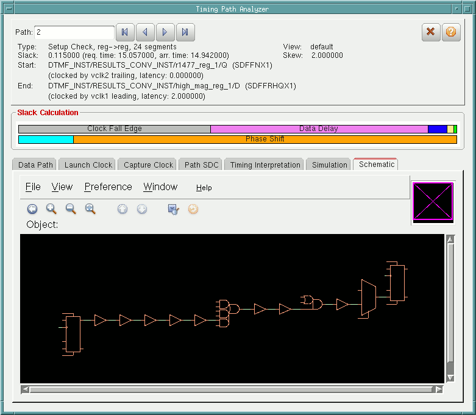
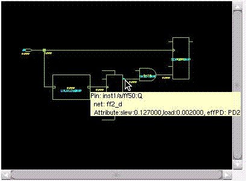
Return to top